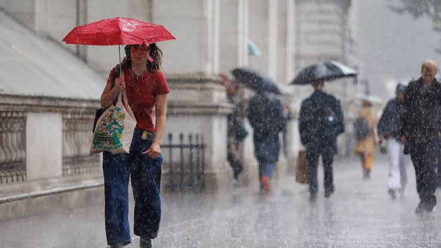

FCE 2026 - Test 8
Reading and Use of English (75 minutes)
Listening (about 40 minutes)
Each recording is played twice. Use headphones and read the questions before you listen.
Writing (80 minutes)
Part 1 - Essay (compulsory)
In your English class you have been discussing teenagers and work. Your teacher has asked you to write an essay for homework.
Write an essay using all the notes and giving reasons for your point of view.
Notes:
Write about:
1. earning their own money
2. having enough time for studies
3. ___________ (your own idea)
Write your essay in 140 - 190 words.
Part 2 - Choose ONE task
Write an answer to one of the questions (a - c) in this part. Write your answer in 140 - 190 words in an appropriate style.
(a) Article: You see this announcement on an English-language website: A Memorable Journey! We are looking for articles about journeys that went wrong but turned out to be great experiences. Tell us where you were going, what happened, and why it was memorable.
(b) Email: Your English-speaking friend Alex is starting to learn a new language and wants some advice. Write an email to Alex suggesting the best ways to practice speaking, how to stay motivated, and what common mistakes to avoid.
(c) Review: You recently downloaded a new fitness or health app on your phone. Write a review for an online magazine explaining what the app does, what you liked or disliked about its features, and whether you would recommend it to other people trying to get fit.
Sending opens your email app with your text. Very long texts are copied to the clipboard so you can paste them.
Speaking (14 minutes)
Practise with a partner or teacher. The real test lasts about 14 minutes.
Part 1 - Interview (2 minutes)
- Tell me about a subject you enjoyed studying at school.
- How often do you use public transport in your area?
- Do you prefer to spend your holidays relaxing or doing activities? Why?
- What kind of job would you like to have in the future?
Part 2 - Long turn (1 minute each)
Candidate A: Compare the pictures and say how these different activities might affect people's physical and mental well-being.
Candidate B: Compare the pictures and say how people might feel experiencing these different weather conditions.
Candidate A's pictures: Lifestyles and Well-being
Compare the pictures and say how these different activities might affect people's physical and mental well-being.
.jpg)

Candidate B's pictures: Extreme Weather
Compare the pictures and say how people might feel experiencing these different weather conditions.


Part 3 - Collaborative task (3 minutes)
What factors are most important when choosing a career? Discuss the ideas below, then decide which TWO are the most important for long-term happiness.
- a high salary
- a personal passion for the work
- flexible working hours
- friendly colleagues
- opportunities for promotion
Part 4 - Discussion (4 minutes)
- Do you think it is common for people to change careers several times in their lives? Why?
- Should schools do more to prepare students for the world of work? How?
- Some people say that working from home makes people less productive. Do you agree?